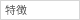

| 150人 | |
|  | 会社・内定者間の交流を目的としています |
| 要望に応じてカスタマイズしています | |
| 2010年10月 |
| 150人 | |
一人ひとりが自らの可能性を発見し、その能力を最大限に伸ばしていけるよう、 『人こそすべて』と考えるＫＵＭＯＮにとって、『人』の可能性を追求し続けること、そして互いの成長を応援しあうことは活動の原点。 |
|
| ２００９年１２月 |
| 約1000名 | |
社員、アルバイトスタッフ全員の加入を義務付け、全社コミュニケーションインフラとして利用 |
|
| 役員からスタッフに向けたメッセージ配信やメディア露出等の予告等を行っている。 ポイント制によるプレゼント贈呈等の企画も実施 |
|
2008年10月 |